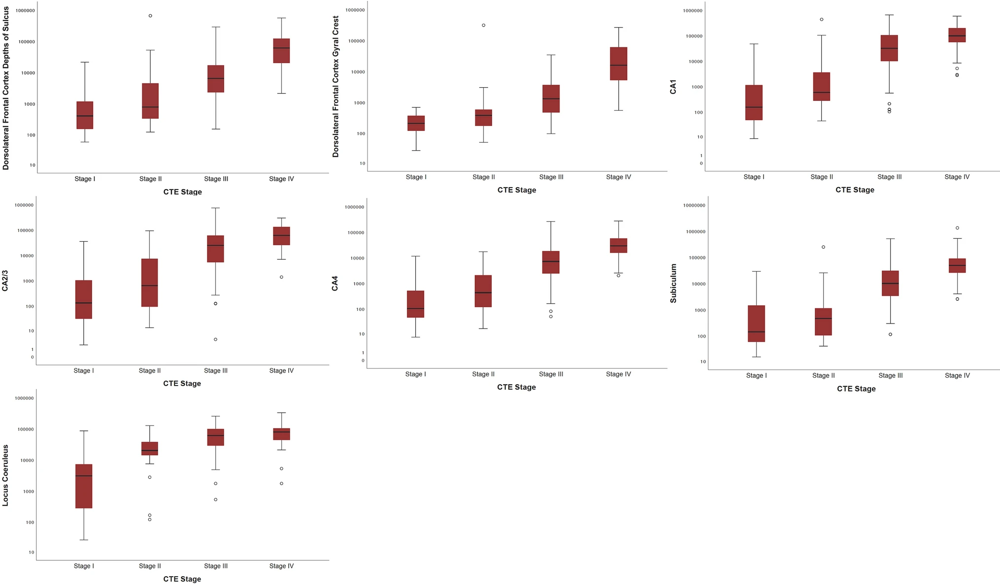

Chronic Traumatic Encephalopathy (CTE) is a degenerative brain disease associated with
repeated brain trauma sustained over multiple years. It is characterized by abnormal accumulation
of hyperphosphorylated tau (p-tau) protein within the brain.
Who is affected by CTE?
Most frequently found in military veterans and athletes who play contact sports such as:
American football
hockey
boxing
rugby
soccar
wrestling
Also found but less commonly in people who have experienced domestic violence or people with
poorly-controlled epilepsy
Age of first exposure to head impact, number of years of exposure, and genetics are all
risk factors that influence the likelihood of an individual developing CTE
What are the symptoms?
Features
Cognitive
Behavior
Mood
Motor
Memory Impairment
Physical Violence
Depression
Parkinsonism
Executive Dysfuction
Impulsivity
Suicidality
Tremor
Impaired Attention
Agression
Apathy
Muscle Weakness
Reduced Impairment
Psychosis
Mood Swings
Ataxia
Images and Figures:
Figure 1: Sections from a control brain, top,
and sections of a brain from someone with stage IV CTE, bottom.

Figure 2: Box plots of quantitative measurements of regional p-tau accumulation by CTE stage. Greater p-tau densitywas associated with a higher CTE stage for all regions assessed (p-values<0.001 for all). (Alosco et al. 2020)